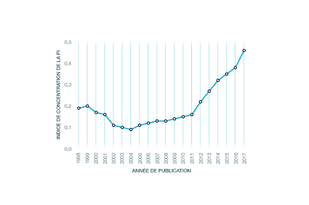
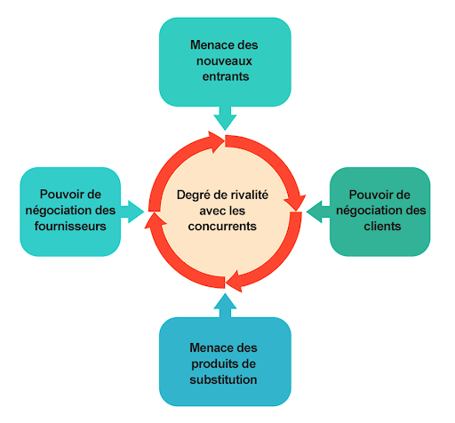

Comment est née l'intelligence artificielle ?
L’histoire de l’intelligence artificielle débute en 1943, avec la publication de l’article “A Logical Calculus of Ideas Immanent in Nervous Activity.” par Warren McCullough et Walter Pitts. Dans ce document, les scientifiques présentent le premier modèle mathématique pour la création d’un réseau de neurones.
Le premier ordinateur à réseau de neurones, Snarc, sera créé en 1950 par deux étudiants de Harvard : Marvin Minsky et Dean Edmonds. La même année, Alan Turing publie le Turing Test qui sert encore aujourd’hui à évaluer les IA.
En 1952, Arthur Samuel crée un logiciel capable d’apprendre à jouer aux échecs de manière autonome. Le terme d’intelligence artificielle, quant à lui, sera prononcé pour la première fois durant la conférence “Dartmouth Summer Research Project on Artificial Intelligence.” de John McCarthy en 1956.
Lors de cet événement, les chercheurs présentent les objectifs et la vision de l’IA. Beaucoup considèrent cette conférence comme la véritable naissance de l’intelligence artificielle telle qu’elle est connue aujourd’hui.
En 1959, Arthur Samuel invente le terme de Machine Learning en travaillant chez IBM. De leur côté, John McCarthy et Marvin Minsky fondent le MIT Artificiel Intelligence Project. En 1963, John McCarthy crée aussi le ” AI Lab ” de l’université de Stanford.
Le Japon et les États-Unis investissent massivement dans la recherche en IA. Les entreprises dépensent plus d’un milliard de dollars par an dans les systèmes experts et l’industrie se développe.
|  |
La Figure illustre l'évolution de la valeur de l'ICPI (indice de concentration de la propriété intellectuelle) à l'échelle mondiale au fil du temps. Après la baisse initiale de l'indice au début des années 2000, on constate une augmentation progressive de sa valeur au fil des ans, ce qui reflète une augmentation de l’intérêt des entreprises dans le domaine de l’IA. |
|---|
Il est intéressant de noter que l'indice s'approche de 0,5 en 2017, ce qui indique un duopole : une situation où les cessionnaires de deux pays déposent principalement des brevets en rapport avec l'IA. On peut établir avec certitude que ces deux pays sont la Chine et les États-Unis, puisqu'ils représentent ensemble 85 % des inventions brevetées dans le monde en 2017.
Le rapport de force.
Aujourd’hui, le rapport de force est à son avis de 50-50, mais il sera bientôt de 60-40 en faveur de Pékin. Dans la deuxième vague, celle de l’IA professionnelle (détection de fraudes, finance, logistique), qui passe par l’emploi des corrélations latentes entre les données, la domination est américaine à 90-10, mais elle sera de 70-30 dans les cinq ans. Dans la troisième vague, celle de l’IA perceptive, soit l’emploi de la technologie dans la reconnaissance faciale et le langage naturel, qui transformera les supermarchés et les maisons connectées, l’avance est à la Chine à 60-40. Et le rapport de force passera à 80-20 dans cinq ans. Enfin, dans la quatrième vague, celle de l’IA autonome, avec l’exemple des véhicules autonomes et des drones, l’hégémonie américaine est claire (90-10), mais il est prévu un 50-50 dans cinq ans.
|  |
La menace des nouveaux entrants |
|---|
La menace des produits de substitutions
Les produits de substitution correspondent aux nouveaux produits ou services susceptibles d’entrer sur le marché et de constituer une alternative à l’offre existante. Généralement, il s’agit de produits innovants apportant une valeur ajoutée supérieure à ce qui est actuellement proposé sur le marché.
L’intelligence artificielle reste unique est ne peut être remplacée par autre chose.
Pouvoir de négociation des clients
Ici, il contient d’analyser le pouvoir de négociation que les clients peuvent exercer sur l’entreprise. Ont-ils le pouvoir d’influencer les prix pratiqués par l’entreprise et/ou les autres conditions de la vente ?
Les clients restent le point essentiel dans toutes les entreprises de ce secteur. Les clients de l’intelligence artificielle sont toute la population ayant accès à internet car ce marché touche tous les domaines de l’informatique pour améliorer les services et la demande des clients de façon autonome. Dans notre cas, l’offre est supérieure à la demande donc les clients disposent d’un important pouvoir de négociation